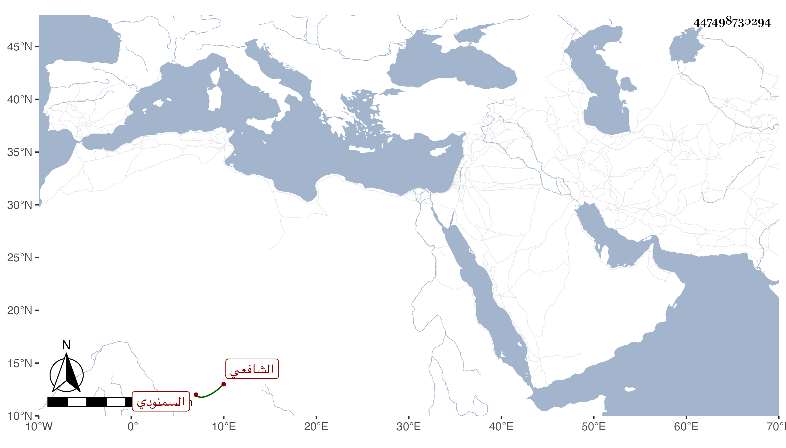

0902Sakhawi.DawLamic.ITO20230111-ara1.EIS1600.447498730294
Biography ID: 447498730294
354
عمر بن عيسى بن عمر السمنودي الشافعي والد عبد الرحمن الماضي . كان فقيها ذا معرفة بالفرائض والميقات مع الصلاح والزهد مذكورا بالكرامات وشريف الخصال انتفع به أهل تلك النواحي كالعز عبد العزيز بن عبد الواحد المناوي فإنه أخذ عنه الفقه والفرائض والميقات بل كان جل انتفاعه به وكذا لقيه الكمال إمام الكاملية صحبة والده والجمال يوسف الصفي فلقنه :
| يا أيها الراضي بأحكامنا | لا بد أن تحمد عقبى الرضا |
| فوض إلينا وابق مستسلما | فالراحة العظمى لمن فوضا |
| وإن تعلقت بأسبابنا | فلا تكن عن بابنا معرضا |
| فإن فينا خلقا باقيا | من كل ما يأتي وما قد مضى |
| لا ينعم المرء بمحبوبه | حتى يرى الخيرة فيما قضى |
مات سنة سبع وعشرين وقد جاز المائة .
